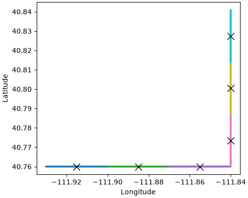

Mobile Measurements#
An analyzer on a car, a train, an aircraft, or a ship measures every second
or so as it moves. Measurements a few seconds apart see nearly the same air,
so a simulation for each one would cost thousands of transport model runs
for little gain. receptors_from_track() groups the
measurements along the track and makes one PointReceptor for
each group. It also returns the track with each measurement’s receptor id,
so after the run you can put the modeled value next to every measurement.
From a track to receptors#
A track is a table with one row per measurement and the columns time,
longitude, latitude, and altitude
(TRACK_SCHEMA). Other columns, such as the
measured mole fractions, come along. Here is half an hour of a car driving
east and then north, measured every second:
In [1]: import numpy as np
In [2]: import pandas as pd
In [3]: from stilt.observations import receptors_from_track
In [4]: rng = np.random.default_rng(42)
In [5]: seconds = np.arange(1800)
In [6]: track = pd.DataFrame({
...: "time": pd.date_range("2024-07-01 18:00", periods=1800, freq="1s"),
...: "longitude": -111.93 + 0.0001 * np.minimum(seconds, 900),
...: "latitude": 40.76 + 0.00009 * np.maximum(seconds - 900, 0),
...: "altitude": 3.0, # inlet height, meters above ground
...: "ch4": 2.0 + 0.02 * rng.standard_normal(1800), # ppm
...: })
...:
In [7]: receptors, table = receptors_from_track(track, every="5min")
In [8]: len(receptors)
Out[8]: 6
In [9]: receptors[0]
Out[9]: PointReceptor(id='202407011802_-111.91505_40.76_3', lon=-111.91505, lat=40.76000, alt=3 agl)
Each receptor sits at the mean time and position of its group, so the six
five-minute groups give six receptors. table is the track with a
receptor column:
In [10]: table.head()
Out[10]:
time ... receptor
0 2024-07-01 18:00:00 ... 202407011802_-111.91505_40.76_3
1 2024-07-01 18:00:01 ... 202407011802_-111.91505_40.76_3
2 2024-07-01 18:00:02 ... 202407011802_-111.91505_40.76_3
3 2024-07-01 18:00:03 ... 202407011802_-111.91505_40.76_3
4 2024-07-01 18:00:04 ... 202407011802_-111.91505_40.76_3
[5 rows x 6 columns]
The receptors follow the track. Each color below is one group, and each cross is its receptor:
In [11]: import matplotlib.pyplot as plt
In [12]: fig, ax = plt.subplots(figsize=(5, 4), layout="constrained")
In [13]: ax.scatter(table.longitude, table.latitude, s=2,
....: c=pd.factorize(table.receptor)[0], cmap="tab10");
....:
In [14]: ax.plot([r.longitude for r in receptors], [r.latitude for r in receptors],
....: "kx", markersize=10);
....:
In [15]: ax.set_xlabel("Longitude");
In [16]: ax.set_ylabel("Latitude");


Choosing the groups#
Group by time with every, or by distance along the track with
spacing, in meters. We recommend five minutes, the default, for a
vehicle on the ground, because a car at city speeds covers a few
kilometers in that time, about one cell of a 3 km meteorology grid. Groups
start on the clock (18:00, 18:05, …), whatever time the track starts.
An aircraft covers 30 km or more in five minutes, so give it spacing
instead, about the size of a meteorology cell:
In [17]: receptors_1km, _ = receptors_from_track(track, spacing=1000)
In [18]: len(receptors_1km)
Out[18]: 17
spacing gives the same number of receptors for each kilometer however
fast the platform moves. A vehicle that stops and keeps measuring stays in
one group until it moves on, so for a track with long stops, use every
or drop the stopped rows first.
A pause in the track longer than gap, 10 minutes by default, ends a
group, so no receptor stands for measurements from both sides of a break
in the data.
Altitudes#
The altitude of a vehicle or a ship is the inlet’s height above the
ground or the water, the default altitude_ref="agl". An aircraft
usually records its GPS altitude above sea level, so pass
altitude_ref="msl".
In a project#
Add the receptors, and keep the table with the project’s inputs as
tables/track.parquet:
import stilt
project = stilt.Project("./mobile") # made with stilt init or Project.init
project.add_receptors(receptors)
project.add_table("track", table)
project.run()
After the run, average the measurements in each group and set them beside
the modeled enhancement of its receptor
(foot.stilt.enhancement, Summing Footprints: Areas And The Jacobian):
import xarray as xr
flux = xr.open_dataarray("ch4_flux.nc") # µmol m⁻² s⁻¹
track = pd.read_parquet(project.table_path("track"))
compare = track.groupby("receptor")[["ch4"]].mean()
for rid in compare.index:
foot = project.simulation(rid, "hrrr").footprint
if foot is not None: # None when no particle reached the grid
compare.loc[rid, "modeled"] = float(foot.stilt.enhancement(flux).sum())
track.merge(compare["modeled"], on="receptor") instead gives each
measurement the modeled value of its receptor. When a simulation fails or a
footprint looks wrong, see Checking A Run.